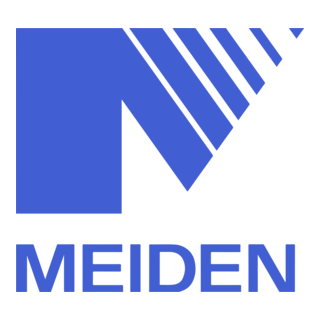

พร้อมเริ่มงานได้ทันที
IT INFRASTRUCTURE · HEALTHCARE IT
นายอานนท์
รัตนพันธ์
IT Infrastructure & Helpdesk Support Specialist
เจ้าหน้าที่ฝ่ายสนับสนุนด้านระบบไอที เทคโนโลยีสารสนเทศ มีประสบการณ์ดูแลระบบโครงสร้างพื้นฐานไอที อุปกรณ์เครือข่าย และซอฟต์แวร์ระดับองค์กรในธุรกิจ Healthcare
PROFILE / 01
Arnon Rattanaphan
Bangkok, Thailand
AGE
23 ปี
STATUS
ได้รับการยกเว้นทหาร (ใบดำ)
3+
Years of IT Support
250+
Users Supported
50+
Printers Managed
Healthcare IT
On-site support · SLA-driven operations
01
ระบบที่ดี เริ่มจาก
Professional Profile
ระบบที่ดี เริ่มจาก
การแก้ปัญหาที่เป็นระบบ
เจ้าหน้าที่ฝ่ายสนับสนุนด้านระบบไอที (IT Support & Helpdesk) เทคโนโลยีสารสนเทศ มีประสบการณ์ดูแลระบบโครงสร้างพื้นฐานไอที อุปกรณ์เครือข่าย และซอฟต์แวร์ระดับองค์กรในธุรกิจ Healthcare ขนาดใหญ่และโครงการ On-site มุ่งเน้นการแก้ไขปัญหาทางเทคนิคอย่างเป็นระบบตามมาตรฐาน SLA และมีความรู้ด้านความปลอดภัยทางไซเบอร์ (Cybersecurity) พร้อมเรียนรู้งานเร็วและเริ่มงานได้ทันที
Focused on reliable support
and stable IT operations.
and stable IT operations.
02
เครื่องมือที่ใช้ดูแล
Technical Stack
เครื่องมือที่ใช้ดูแล
ระบบให้เดินต่อ
Networking & Security
TCP/IP
IP Management
Network Printer configuration
DNS
DHCP
 Cisco Cybersecurity Fundamentals
Cisco Cybersecurity Fundamentals
Tools & Operations
Programming & Automation
Hardware Expertise
Soft Skills & Languages
03
ประสบการณ์
Professional Experience
ประสบการณ์
ที่ลงมือทำจริง
CURRENT ROLE
IT Support (Printer & Helpdesk)
บริษัท วิลคอน ดิสทริบิวชั่น จำกัด · On-site ณ โรงพยาบาลเปาโลเกษตร
ดูแลโครงสร้างพื้นฐานงานพิมพ์ระดับองค์กรและ End-user Support ในสภาพแวดล้อม Healthcare IT พร้อมควบคุมนโยบายไอทีผ่าน StarCat 11 Enterprise Console ตั้งแต่รับแจ้งเหตุ วิเคราะห์ปัญหา ติดตามผล และประสานงานแก้ไขจนปิดเคสตามมาตรฐาน SLA
- ปฏิบัติหน้าที่ IT Helpdesk และ On-site Support รับแจ้ง บันทึก จัดลำดับความสำคัญ ติดตาม และประสานงาน Incident ให้แก่บุคลากรทางการแพทย์และเจ้าหน้าที่ เพื่อให้การแก้ไขปัญหาเป็นไปตาม SLA-Driven Operations
- ให้บริการ Remote Support และ On-site เพื่อแก้ไขปัญหาด้านฮาร์ดแวร์ ซอฟต์แวร์ ระบบปฏิบัติการ (Windows 10/11) และการใช้งานทั่วไป แก่ End-user อย่างรวดเร็วและตรงจุด
- บริหารจัดการบัญชีผู้ใช้งานผ่าน Active Directory (AD) เช่น การตั้งค่า User, Reset Password, จัดการ Group Policy เบื้องต้น และกำหนดสิทธิ์การเข้าถึงระบบต่างๆ
- ติดตั้งระบบปฏิบัติการ จัดเตรียมเครื่องคอมพิวเตอร์ (Deploy/Setup) ตั้งค่าอีเมล และติดตั้งซอฟต์แวร์ที่จำเป็นก่อนส่งมอบให้พนักงานหรือแผนกต่างๆ
- วิเคราะห์ปัญหาเบื้องต้น แยกแยะอาการที่เกิดซ้ำ และประสานงาน Problem Management เพื่อสนับสนุนการแก้ไขที่ต้นเหตุและลดผลกระทบต่อการปฏิบัติงานของโรงพยาบาล
- ดูแลระบบเครือข่ายเบื้องต้น (Network Troubleshooting) ตรวจสอบการเชื่อมต่อ LAN/Wi-Fi (TCP/IP, DNS, DHCP) เพื่อให้การทำงานราบรื่นไม่มีสะดุด
- บริหารจัดการ Printer Fleet และ IP Management ตั้งแต่การจัดสรร กำหนดค่า และตรวจสอบ IP Address ของเครื่องพิมพ์ระดับองค์กร (Fuji Apeos / Xerox) บนเครือข่ายโรงพยาบาล
- ดำเนินการ Preventive Maintenance (PM) ดูแล IT Asset Management ที่เกี่ยวข้องกับอุปกรณ์เครื่องพิมพ์ พร้อมประสานงานส่งต่อเคสกับทีมช่างเทคนิคภายนอก (Vendor)
Key Achievements
- รักษามาตรฐาน SLA Compliance ได้สูงกว่า 95% ในการตอบสนองและแก้ไขปัญหา Helpdesk ให้กับบุคลากรทางการแพทย์
- บริหารจัดการและตั้งค่าเครือข่ายสำหรับเครื่องพิมพ์ระดับองค์กรกว่า 50+ เครื่อง ทั่วโรงพยาบาล ลดปัญหา IP Conflict และการขัดข้องของการพิมพ์เอกสารสำคัญ
- ลดอัตราการแจ้งเสียซ้ำ (Recurring Issues) ผ่านการทำ Preventive Maintenance และประสานงาน Vendor อย่างมีประสิทธิภาพ
พนักงาน (Store Assistant)
บริษัท มิสเตอร์. ดี.ไอ.วาย. ทรดดิ้ง (ประเทศไทย) จำกัด · สาขาที่ 321 โลตัส หลักสี่
ดูแลกระบวนการปฏิบัติงานหน้าร้านตั้งแต่การให้บริการลูกค้า การรับ-จ่ายสินค้า ไปจนถึงการควบคุมข้อมูลคงคลังและตรวจสอบความถูกต้องของสต็อกตามระบบของบริษัท
- ให้บริการ แนะนำสินค้า และตอบข้อซักถามแก่ลูกค้า พร้อมส่งมอบประสบการณ์บริการที่ประทับใจ (Customer Service & Service Mind)
- ใช้งานระบบเครื่องบันทึกเงินสด (POS System) ในการทำรายการชำระเงินและจัดการยอดขายหน้าร้าน
- บริหารจัดการสต็อก ควบคุมการรับ-จ่ายสินค้าเข้าคลัง และตรวจสอบรายการเคลื่อนไหว (Inventory Control) อย่างแม่นยำ
- ดำเนินการ Stock Audit ตรวจนับสินค้าจริงเปรียบเทียบกับระบบ เพื่อป้องกันสินค้าสูญหายและให้ข้อมูลมีความถูกต้องเสมอ
- ดูแลการจัดเรียงสินค้าบนชั้นวาง (Visual Merchandising) เติมสินค้าให้เพียงพอต่อการขาย และดูแลความสะอาดของพื้นที่

On-site IT Support
Thai Meidensha Co., Ltd.
สนับสนุน On-site IT และ Project Infrastructure ในโครงการก่อสร้างและขยายโรงงาน ดูแลระบบเครือข่าย คอมพิวเตอร์ และอุปกรณ์ประจำ Site Office ตั้งแต่การติดตั้ง ตั้งค่า ทดสอบ และบำรุงรักษาระบบที่ใช้งานจริงหน้างาน
- บริหารจัดการโครงสร้างพื้นฐานด้านไอที (IT Infrastructure) ประจำไซต์งานก่อสร้าง เพื่อให้วิศวกรและทีมงานสามารถปฏิบัติงานได้อย่างต่อเนื่อง
- ออกแบบ ติดตั้ง และบำรุงรักษาระบบเครือข่ายอินเทอร์เน็ต (Network Setup) รวมไปถึง Network Switch, Router และ Access Point ภายใน Site Office
- ติดตั้งและตั้งค่าเครื่องพิมพ์ (Printer) และเครื่องพล็อตเตอร์ (Plotter) ประจำไซต์งาน เพื่อรองรับการพิมพ์แบบแปลนวิศวกรรม (Blueprint / Layout Drawing)
- ทำหน้าที่ Helpdesk และ IT Support คอยรับแจ้งปัญหา ตรวจสอบ และซ่อมบำรุงฮาร์ดแวร์/ซอฟต์แวร์ของโน้ตบุ๊ก คอมพิวเตอร์ และอุปกรณ์ไอทีอื่นๆ ประจำไซต์งาน
- ติดตั้งระบบกล้องวงจรปิด (CCTV System) กำหนดค่าเครือข่าย และตรวจสอบความพร้อมในการบันทึกภาพเพื่อการรักษาความปลอดภัยของโครงการก่อสร้าง
Key Achievements
- รับผิดชอบการติดตั้งและวางระบบโครงสร้างพื้นฐานด้านไอที (เครือข่าย, กล้องวงจรปิด, เครื่องพิมพ์) สำหรับ Site Office ได้แล้วเสร็จตามกำหนดเวลา
- ให้บริการ On-site Troubleshooting อย่างรวดเร็ว ลดปัญหาความล่าช้าของงานโครงการที่เกิดจากข้อขัดข้องทางไอที
IT Support Intern (นักศึกษาฝึกงาน)
โรงแยกก๊าซธรรมชาติระยอง PTT Group
ฝึกงาน IT Support ในพื้นที่อุตสาหกรรม High-Security ดูแลระบบคอมพิวเตอร์ เครือข่าย และเซิร์ฟเวอร์เบื้องต้น พร้อมให้ User Support ภายใต้แนวทางและมาตรฐานการทำงานขององค์กรขนาดใหญ่
- สนับสนุนการดูแลและบำรุงรักษาระบบคอมพิวเตอร์ เซิร์ฟเวอร์ และระบบเครือข่ายเบื้องต้น ภายในสภาพแวดล้อมที่มีความปลอดภัยระดับสูง (High-Security Site)
- ปฏิบัติงานในฐานะ Helpdesk เพื่อให้บริการ Technical Support แก่พนักงาน รับแจ้งปัญหา วิเคราะห์อาการ และแก้ไขด้านฮาร์ดแวร์และซอฟต์แวร์เบื้องต้น
- เรียนรู้มาตรฐานการทำงานแบบองค์กรขนาดใหญ่ (Enterprise Standards) ในการจัดการระบบ IT ควบคู่กับระบบงานอุตสาหกรรม (OT)
- ช่วยติดตั้งและตั้งค่าโปรแกรมพื้นฐาน จัดเตรียมเครื่องคอมพิวเตอร์ และอุปกรณ์ต่อพ่วงต่างๆ สำหรับผู้ปฏิบัติงานในส่วนต่างๆ ของโรงงาน
Education & Certification
พื้นฐานที่ต่อยอด
ไปกับทุกระบบ
การศึกษา
ประกาศนียบัตรวิชาชีพ (ปวช.) สาขาเทคโนโลยีสารสนเทศ (IT)
วิทยาลัยเทคนิคมาบตาพุด · สำเร็จการศึกษา พ.ศ. 2563
ใบรับรอง
Certificate of Course Completion: Introduction to Cybersecurity
Cisco Networking Academy · ออกให้ ณ วันที่ 12 กรกฎาคม 2569
ดูใบรับรอง